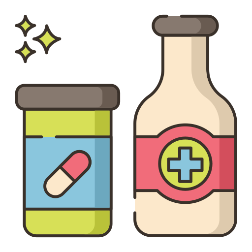

How do I make my period hurt less?
Cramps
It's normal to feel cramps while on your period! Cramps are caused by chemicals your body produces to make your uterus push blood out of your vagina during your period. You might have a higher chance of getting your period if:
- Your period is just starting
- You have longer periods or a heavier blood flow
- Your female relatives have or had cramps as symptoms
- You smoke
But don't let those cramps stop you! There's a couple things you can do to help relieve them:
- Take pain relievers at the proper amount and time. Keep a schedule!
- Exercise! This can help ease cramps because your body releases endorphins, a chemical that makes you feel good
- Apply heat like a warm bottle to your pelvic area to feel better
- Take a warm bath or shower, and make yourself comfortable!
What pain is not normal?
If pain relievers are not helping you and you find it very difficult and painful to do activities such as going to school, there might be another reason for your pain. In this case, be sure to see a doctor.
Helpful resources
Check out these handy resources to learn more about relieving pain:
